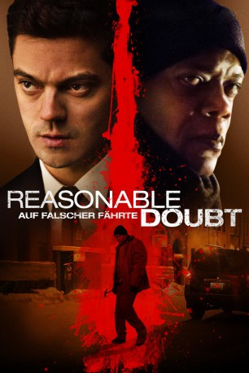

#5049 Reasonable Doubt - Auf falscher Fährte
Alternativ: Reasonable Doubt
 
 IMDB-Wertung: 5.7 / 10
IMDB-Wertung: 5.7 / 10  Metascore: 0
Metascore: 0 
Der Anwalt Mitch Brockden fährt nachts einen Passanten an. Er ruft zwar einen Krankenwagen für den Verletzen, begeht jedoch Fahrerflucht. Mitch glaubt, dass jemand ihn beobachtet haben könnte, konnte aber in der Dunkelheit niemanden am Tatort erkennen. Er hörte lediglich, wie jemand in einer Gasse ein Sturmfeuerzeug öffnet bzw. schließt. Dennoch kommt Mitch zunächst mit dem Schrecken davon, denn als vermeintlicher Täter kommt für die Ermittler Clinton Davis in Frage, der schließlich verhaftet wird und nun unter Mordanklage steht. Doch jemand weiß von Mitchs Schuld und schon bald schwebt Mitchs Familie in großer Gefahr.
Jahr: 2014
Dauer: 91 Minuten
FSK: 16
Land: Deutschland Studio: Koch MediaTonspuren: DTS - ,
Untertitel: Deutsch,
Auflösung: 1080p (1920x800) Größe: 5591 MB
Genre: Thriller, Krimi
Regisseur: Peter Howitt
Drehbuch: Michael Kane
Soundtrack:
Darsteller:
 Dominic Cooper als Mitch Brockden
Dominic Cooper als Mitch Brockden Samuel L. Jackson als Clinton Davis
Samuel L. Jackson als Clinton Davis Gloria Reuben als Det. Blake Kanon
Gloria Reuben als Det. Blake Kanon Ryan Robbins als Jimmy Logan
Ryan Robbins als Jimmy Logan Erin Karpluk als Rachel Brockden
Erin Karpluk als Rachel Brockden- Dylan Taylor als Stuart Wilson
- Karl Thordarson als Cecil Akerman
 John B. Lowe als Judge G. Mckenna
John B. Lowe als Judge G. Mckenna- Philippe Brenninkmeyer als DA Jones
 Will Woytowich als Desk Sargeant
Will Woytowich als Desk Sargeant- Lane Styles als Emma
 Sergio Kato als Court Bailiff , uncredited
Sergio Kato als Court Bailiff , uncredited- Karen Tusa als Jury Member , uncredited
- Dean Harder als Terry Roberts
- Carson Nattrass als Officer Travis
- Jessica Burleson als Secretary
- Kelly Wolfman als Dr. Brown
- Steve Ratzlaff als Coroner
- Jon Ljungberg als Reporter #1, Jeff Franklin
- Curtis Moore als Reporter #2
- Darren Wall als Frank
- Jacqueline Loewen als Nanny
- David Duncan als Court Bailiff
- Gabriel Daniels als Gate Security
- Lance Cartwright als Pedro Gonzales
- Thanya Romero als Pedro's Wife
- Chris Witkowski II als Francis Mulligan
- Jim Kirby als Photographer , uncredited
 Lorrie Papadopoulos als Restaurant Patron , uncredited
Lorrie Papadopoulos als Restaurant Patron , uncredited
Datei: X:\2014(N-Z)\Reasonable Doubt - Auf falscher Fährte (2014, FSK16, 1920x800).mkv seit 22.12.2016
Festplatte: HD 2013(I-Z)-2014(A-Z)
 Es gibt insgesamt 163 Filme in der Gruppe '2014(N-Z)'
Es gibt insgesamt 163 Filme in der Gruppe '2014(N-Z)'